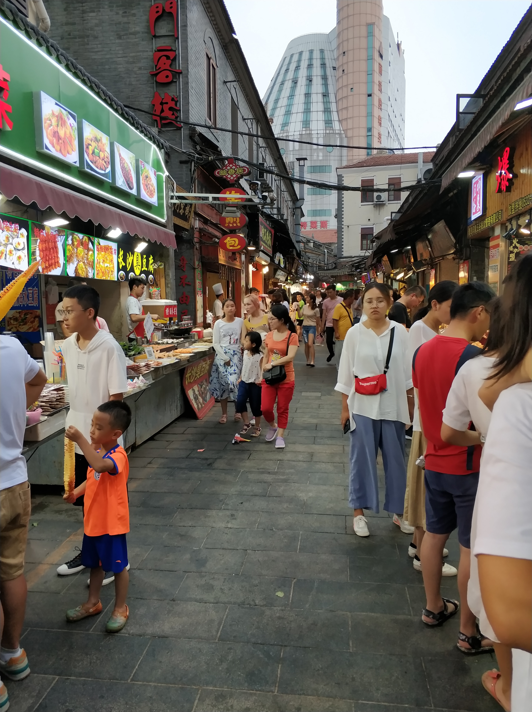
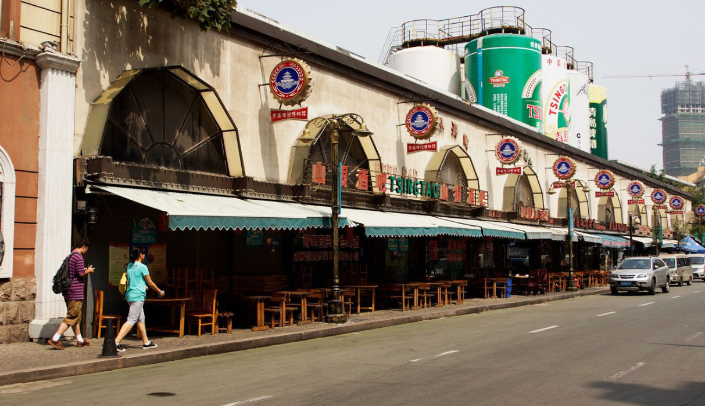
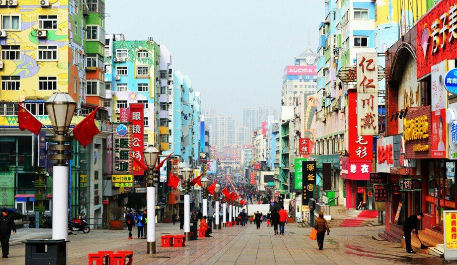

劈柴院美食街
劈柴院离青岛火车站最近，在中山路上，一般，初到青岛的游客都会到这里来寻找青岛美食，劈柴院不大，但是“麻雀虽小，五脏俱全”，狭小的小道两边，密密麻麻都是小店，烤鱼丸滋滋作响；老北京爆肚热辣够味；各个酒楼都摆着各式各样的海鲜，螃蟹，超大的扇贝，大小不一的鱿鱼，想要什么都能烤；还有在青岛很出名的豆腐脑、沧口锅贴。（缺点价格太贵，不太推荐）



登州路啤酒街
很热闹的一条街，各种大排档从街口一直排到街尾，最主要是因为具有百年历史的青岛啤酒厂就坐落在这条街上，啤酒厂的一部分就是用来开设啤酒博物馆，其中比较有特色的是博物馆可以送原厂新鲜出炉的啤酒给游客品尝，还可以参观啤酒厂是如何用现代化的设备生产啤酒的，互动性很强，最后还有个醉酒小屋，进入屋中后整个人就是像喝醉了一般，东倒西歪，站立不稳，而且也有一种喝醉时晕晕的感觉很奇怪

云霄路美食街
青岛市闽江路美食街区是青岛市主要的高档餐饮娱乐街区，在当地及国内享有很高的知名度。近几年，在青岛市和市南区政府倾力打造包装下，整个街区档次不断提升，目前已成为青岛市具有鲜明特色，功能齐全的美食、休闲、购物街区



台东步行街
青岛台东步行街，尤其是到了晚上，本地的市民和游客都是非常多的，现在还有小吃一条街，更是特别的热闹！人来人往的，熙熙攘攘的人群，很热闹！青岛最热闹的一条街，小吃摊位和门面林立，有早些年就有的门面，也有近些年调制的临时房。小吃的种类突破了有些地方和糖球会的以烧烤为主，各种选择还是蛮多的，许多需要排队好久！